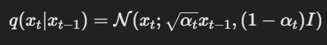

扩散模型问世至今，因其训练过程的稳定性和生成样本的多样性，受到了广泛的关注和应用，相应的开源社区贡献的工具链也趋向于更易用，HuggingFace的diffusers库便是其中之一。
diffusers提供了非常简洁和直观的API接口，能够让研究人员和开发者快速实现扩散模型的训练和推理。即便是对扩散模型不太熟悉的用户，也能通过少量的代码实现高效的图像生成任务。
本文基于diffusers，包含如下内容：
1.通过一个简易demo来直观感受使用diffusers中的快速生图的方法
2.使用smithsonian_butterflies_subset数据集，通过diffusers来搭建一个完整的图像生成小项目，包括数据集准备、模型训练、模型推理等步骤
3.介绍如何基于已有的预训练权重，通过微调和引导技术，来控制生成图片整体的细节走向，如颜色偏好，内容偏好等
4.介绍火出圈的StableDiffusion
5.介绍DDIM反转，用于控制图像的局部区域生成细节走向，该技术极大地提高了扩散模型的可玩性
零. 准备工具函数 首先，导入常用的库，并编写后续将被重复使用的工具函数，用于图像可视化。
1 2 3 4 5 6 7 import numpy as npimport torchimport torch.nn.functional as Ffrom matplotlib import pyplot as pltfrom PIL import Imageimport torchvisionfrom tqdm import tqdm
1 2 3 4 5 6 7 8 9 10 11 def show_images (x ): x = x * 0.5 + 0.5 grid = torchvision.utils.make_grid(x) grid_im = grid.detach().cpu().permute(1 , 2 , 0 ).clip(0 , 1 ) *255 grid_im =Image.fromarray(np.array(grid_im).astype(np.uint8)) return grid_im def make_grid (images, size=64 ): output_im = Image.new("RGB" , (size * len (images), size)) for i,im in enumerate (images): output_im.paste(im.resize((size, size)), (i * size, 0 )) return output_im
一. 文生图demo的快速实现 本节以DreamBooth为例，使用diffusers快速实现文生图。
其中涉及到的具体模型会在后续展开介绍，这里暂时无需深究，只需动手体验一下文生图即可。
1 2 3 4 5 from diffusers import StableDiffusionPipelineimport torchmodel_id = "sd-dreambooth-library/mr-potato-head" pipe = StableDiffusionPipeline.from_pretrained(model_id, torch_dtype=torch.float16).to('cuda' )
运行上述代码，就搭建好了一个文生图的管线（注：在diffusers中，每个模型的推理函数都被封装成一个pipline，本文称之为管线），接下来调用该管线，就可以生成图像了：
1 2 3 prompt = "an abstract sky of universe bypicasso" image = pipe(prompt, num_inference_steps=50 ,guidance_scale=7.5 ).images[0 ] image
二.使用diffusers动手做一个完整的图像生成项目 本节要做的项目在diffusers中已有可直接使用的管线，这里先使用已有管线进行运行测试，然后来学习如何一步一步从头实现这个管线。
1 2 3 4 from diffusers import DDPMPipelinebutterfly_pipeline =DDPMPipeline.from_pretrained("johnowhitaker/ddpm-butterflies-32px" ).to('cuda' ) images = butterfly_pipeline(batch_size=8 ).images make_grid(images)
2.1 数据集准备 首先下载训练数据集
1 2 3 4 5 6 7 8 9 10 11 12 13 14 15 16 17 18 19 20 21 22 23 24 25 26 27 28 29 import torchvision!pip install -q datasets from datasets import load_datasetfrom torchvision import transformsdataset = load_dataset("huggan/smithsonian_butterflies_subset" ,split="train" ) image_size = 32 batch_size = 64 preprocess = transforms.Compose( [ transforms.Resize((image_size, image_size)), transforms.RandomHorizontalFlip(), transforms.ToTensor(), transforms.Normalize([0.5 ], [0.5 ]), ] ) def transform (examples ): images = [preprocess(image.convert("RGB" )) for image in examples["image" ]] return {"images" : images} dataset.set_transform(transform) train_dataloader = torch.utils.data.DataLoader(dataset, batch_size=batch_size, shuffle=True )
查看一下数据集中的部分图片：
1 2 3 xb = next (iter (train_dataloader))["images" ].to('cuda' )[:8 ] print ("X shape:" , xb.shape)show_images(xb).resize((8 * 64 , 64 ), resample=Image.NEAREST)
2.2 调度器 这里使用经典的DDPM调度器：
1 2 3 from diffusers import DDPMSchedulernoise_scheduler = DDPMScheduler(num_train_timesteps=1000 , beta_start=0.001 , beta_end=0.004 )
定义好调度器之后，来尝试使用该调度器对图片进行加噪：
1 2 3 4 5 noise = torch.randn_like(xb) timesteps = torch.linspace(0 , 999 , 8 ).long().to('cuda' ) noisy_xb = noise_scheduler.add_noise(xb, noise, timesteps) print ("Noisy X shape" , noisy_xb.shape)show_images(noisy_xb).resize((8 * 64 , 64 ),resample=Image.NEAREST)
2.3 定义扩散模型 用于预测噪声的模型是UNet，定义如下：
1 2 3 4 5 6 7 8 9 10 11 12 13 14 15 16 17 18 19 20 21 22 23 from diffusers import UNet2DModelmodel = UNet2DModel( sample_size=image_size, in_channels=3 , out_channels=3 , layers_per_block=2 , block_out_channels=(64 , 128 , 128 , 256 ), down_block_types=( "DownBlock2D" , "DownBlock2D" , "AttnDownBlock2D" , "AttnDownBlock2D" , ), up_block_types=( "AttnUpBlock2D" , "AttnUpBlock2D" , "UpBlock2D" , "UpBlock2D" , ), ) model.to('cuda' )
测试一下模型：
1 2 3 with torch.no_grad(): model_prediction = model(noisy_xb, timesteps).sample model_prediction.shape
输出：
1 torch.Size([8, 3, 32, 32])
2.4 创建扩散模型训练循环 1 2 3 4 5 6 7 8 9 10 11 12 13 14 15 16 17 18 19 20 21 22 23 24 25 26 27 28 29 30 noise_scheduler = DDPMScheduler( num_train_timesteps=1000 , beta_schedule="squaredcos_cap_v2" ) optimizer = torch.optim.AdamW(model.parameters(), lr=4e-4 ) losses = [] for epoch in range (30 ): for step, batch in enumerate (train_dataloader): clean_images = batch["images" ].to('cuda' ) noise =torch.randn(clean_images.shape).to('cuda' ) bs = clean_images.shape[0 ] timesteps = torch.randint(0 , noise_scheduler.num_train_timesteps, (bs,),device='cuda' ).long() noisy_images = noise_scheduler.add_noise(clean_images, noise, timesteps) noise_pred = model(noisy_images, timesteps, return_dict=False )[0 ] loss = F.mse_loss(noise_pred, noise) loss.backward(loss) losses.append(loss.item()) optimizer.step() optimizer.zero_grad() if (epoch + 1 ) % 5 == 0 : loss_last_epoch = sum (losses[-len (train_dataloader) :])/len (train_dataloader) print (f"Epoch:{epoch+1 } , loss: {loss_last_epoch} " )
训练日志：
1 2 3 4 5 6 Epoch:5, loss: 0.15131539199501276 Epoch:10, loss: 0.11000193934887648 Epoch:15, loss: 0.09896771190688014 Epoch:20, loss: 0.0816401862539351 Epoch:25, loss: 0.07495242427103221 Epoch:30, loss: 0.07060358510352671
检查一下训练损失：
1 2 3 4 fig, axs = plt.subplots(1 , 2 , figsize=(12 , 4 )) axs[0 ].plot(losses) axs[1 ].plot(np.log(losses)) plt.show()
这样，一个图像生成模型就训练完成了。
2.5 图像的生成 在完成模型训练后，需要本小节来实现模型的推理，即图像生成。
方法1：建立一个diffusers管线 1 2 3 4 5 from diffusers import DDPMPipelineimage_pipe = DDPMPipeline(unet=model,scheduler=noise_scheduler) pipeline_output = image_pipe() pipeline_output.images[0 ]
方法2：自定义一个采样循环 首先来随机初始化8张图片：
1 2 sample = torch.randn(8 , 3 , 32 , 32 ).to('cuda' ) show_images(sample)
可以看到，这些图片上全是噪声。
接下来，定义采样循环来迭代的消除噪声，就完成了图像的生成：
1 2 3 4 5 6 7 8 9 10 for i, t in tqdm(enumerate (noise_scheduler.timesteps), total=len (noise_scheduler.timesteps), desc="Diffusion Steps" ): with torch.no_grad(): residual = model(sample, t).sample sample = noise_scheduler.step(residual, t, sample).prev_sample show_images(sample)
至此，图像生成项目已全部完成。
三. 微调和引导 现在，你已经学会了如何借助diffusers库，在自定义数据集上训练图像生成模型并完成推理。
但是，生成的图像是和训练集近似分布的，如何引导模型的生成结果向定制化的需求靠近呢？本节将介绍相关的实现技术。
不过在开始之前，还需要优化一个问题。如果仔细观察就会发现，上面所使用的DDPM调度器，在推理时需要迭代1000步，这是一个相当慢的循环操作。
解决方法就是将调度器由DDPM换成DDIM。相较于DDPM，DDIM可以用单步迭代来模拟DDPM中的多步迭代，因此极大地降低了总的迭代次数。
3.1 环境准备 1 2 3 4 5 6 7 8 9 10 11 12 13 14 !pip install -qq diffusers datasets accelerate wandb open -clip-torch import numpy as npimport torchimport torch.nn.functional as Fimport torchvisionfrom datasets import load_datasetfrom diffusers import DDIMScheduler, DDPMPipelinefrom matplotlib import pyplot as pltfrom PIL import Imagefrom torchvision import transformsfrom tqdm.auto import tqdmdevice='cuda' if torch.cuda.is_available() else 'cpu'
3.2 使用DDIM-更快的调度器 首先定义一个DDPM的管线：
1 2 3 4 5 image_pipe = DDPMPipeline.from_pretrained("google/ddpm-celebahq-256" ) image_pipe.to(device) images = image_pipe().images images[0 ]
然后，创建一个更快的DDIM调度器并设置推理迭代次数为40：
1 2 scheduler = DDIMScheduler.from_pretrained("google/ddpm-celebahq-256" ) scheduler.set_timesteps(num_inference_steps=40 )
现在，将上面的DDPMPipeline的调度器由DDPM换成DDIM，使用和2.5小节中类似的自定义采样循环来实现图像生成：
1 2 3 4 5 6 7 8 9 10 11 12 13 14 15 16 17 18 19 20 21 22 23 24 25 26 x = torch.randn(4 , 3 , 256 , 256 ).to(device) for i, t in tqdm(enumerate (scheduler.timesteps)): model_input = scheduler.scale_model_input(x, t) with torch.no_grad(): noise_pred = image_pipe.unet(model_input, t)["sample" ] scheduler_output = scheduler.step(noise_pred, t, x) x = scheduler_output.prev_sample if i % 10 == 0 or i == len (scheduler.timesteps) - 1 : fig, axs = plt.subplots(1 , 2 , figsize=(12 , 5 )) grid = torchvision.utils.make_grid(x,nrow=4 ).permute(1 , 2 , 0 ) axs[0 ].imshow(grid.cpu().clip(-1 , 1 ) * 0.5 + 0.5 ) axs[0 ].set_title(f"Current x (step {i} )" ) pred_x0 = ( scheduler_output.pred_original_sample ) grid = torchvision.utils.make_grid(pred_x0, nrow=4 ).permute(1 , 2 , 0 ) axs[1 ].imshow(grid.cpu().clip(-1 , 1 ) * 0.5 + 0.5 ) axs[1 ].set_title(f"Predicted denoised images (step{i} )" ) plt.show()
现在，使用基于DDIM执行图像生成操作，可以看到，只需40次迭代就可以很快得到生成结果：
1 2 3 image_pipe.scheduler = scheduler images = image_pipe(num_inference_steps=40 ).images images[0 ]
3.3 微调扩散模型 首先准备数据集，仍使用之前的蝴蝶数据集。
1 2 3 4 5 6 7 8 9 10 11 12 13 14 15 16 17 18 19 20 21 dataset_name ="huggan/smithsonian_butterflies_subset" dataset = load_dataset(dataset_name, split="train" ) image_size =256 batch_size =4 preprocess = transforms.Compose( [ transforms.Resize((image_size, image_size)), transforms.RandomHorizontalFlip(), transforms.ToTensor(), transforms.Normalize([0.5 ], [0.5 ]), ] ) def transform (examples ): images = [preprocess(image.convert("RGB" )) for image in examples["image" ]] return {"images" : images} dataset.set_transform(transform) train_dataloader = torch.utils.data.DataLoader( dataset, batch_size=batch_size, shuffle=True )
查看数据集示例：
1 2 3 4 print ("Previewing batch:" )batch =next (iter (train_dataloader)) grid = torchvision.utils.make_grid(batch["images" ], nrow=4 ) plt.imshow(grid.permute(1 , 2 , 0 ).cpu().clip(-1 , 1 ) *0.5 +0.5 )
现在，基于上面的celebahq人脸数据集上训练的权重，在蝴蝶数据集上进行微调：
1 2 3 4 5 6 7 8 9 10 11 12 13 14 15 16 17 18 19 20 21 22 23 24 25 26 27 28 29 30 31 num_epochs = 2 lr = 1e-5 grad_accumulation_steps = 2 optimizer = torch.optim.AdamW(image_pipe.unet.parameters(),lr=lr) losses = [] for epoch in range (num_epochs): for step, batch in tqdm(enumerate (train_dataloader),total=len (train_dataloader)): clean_images = batch["images" ].to(device) noise =torch.randn(clean_images.shape).to(clean_images.device) bs = clean_images.shape[0 ] timesteps = torch.randint(0 ,image_pipe.scheduler.num_train_timesteps,(bs,),device=clean_images.device,).long() noisy_images =image_pipe.scheduler.add_noise(clean_images,noise,timesteps) noise_pred = image_pipe.unet(noisy_images, timesteps, return_dict=False )[0 ] loss = F.mse_loss(noise_pred, noise) losses.append(loss.item()) loss.backward() if (step + 1 ) % grad_accumulation_steps == 0 : optimizer.step() optimizer.zero_grad() print (f"Epoch {epoch} average loss: {sum (losses[-len (train_dataloader):])/len (train_dataloader)} " )
模型训练结束，执行推理：
1 2 3 4 5 6 7 8 9 x = torch.randn(8 , 3 , 256 , 256 ).to(device) for i, t in tqdm(enumerate (image_pipe.scheduler.timesteps)): model_input = scheduler.scale_model_input(x, t) with torch.no_grad(): noise_pred = image_pipe.unet(model_input, t)["sample" ] x = image_pipe.scheduler.step(noise_pred, t, x).prev_sample grid = torchvision.utils.make_grid(x, nrow=4 ) plt.imshow(grid.permute(1 , 2 , 0 ).cpu().clip(-1 , 1 ) * 0.5 + 0.5 )
3.4 扩散模型之引导 引导，指的是在模型训练完成后，在执行模型推理时，使用一些技术手段来使得生成结果的内容更偏向于自定义的风格。
本届介绍两种引导手段：
在开始之前，首先来准备一个预训练好的管线，并将调度器更换成速度更快的DDIM：
1 2 pipeline_name ="johnowhitaker/sd-class-wikiart-from-bedrooms" image_pipe =DDPMPipeline.from_pretrained(pipeline_name).to(device)
1 2 3 4 5 6 7 8 9 10 11 12 13 scheduler = DDIMScheduler.from_pretrained(pipeline_name) scheduler.set_timesteps(num_inference_steps=40 ) x = torch.randn(8 , 3 , 256 , 256 ).to(device) for i, t in tqdm(enumerate (scheduler.timesteps)): model_input = scheduler.scale_model_input(x, t) with torch.no_grad(): noise_pred = image_pipe.unet(model_input, t)["sample" ] x = scheduler.step(noise_pred, t, x).prev_sample
1 2 3 grid = torchvision.utils.make_grid(x, nrow=4 ) plt.imshow(grid.permute(1 , 2 , 0 ).cpu().clip(-1 , 1 ) *0.5 +0.5 )
3.4.1 颜色引导 颜色引导（Color Guidance） 是一种在扩散模型中生成特定颜色风格或目标图像时，增加对颜色约束的方法。这种方法可以确保生成的图像在颜色空间上满足特定的要求，比如突出某种颜色、控制亮度对比，或者匹配参考图像的配色。
首先，定义颜色损失函数，并设置引导的强度：
1 2 3 4 5 6 7 8 9 10 11 12 13 14 15 def color_loss (images, target_color=(0.9 , 0.9 , 0.9 ): """给定一个RGB值，返回一个损失值，用于衡量图片的像素值与目标颜色相差多少""" target = ( torch.tensor(target_color).to(images.device) * 2 - 1 ) target = target[None , :, None , None ] error = torch.abs ( images - target ).mean() return error guidance_loss_scale = 40
1 2 3 4 5 6 7 8 9 10 11 12 13 14 15 16 17 18 19 20 21 22 23 24 25 26 27 28 29 30 31 32 x = torch.randn(8 , 3 , 256 , 256 ).to(device) for i, t in tqdm(enumerate (scheduler.timesteps)): model_input = scheduler.scale_model_input(x, t) with torch.no_grad(): noise_pred = image_pipe.unet(model_input, t)["sample" ] x = x.detach().requires_grad_() x0 = scheduler.step(noise_pred, t, x).pred_original_sample loss = color_loss(x0) * guidance_loss_scale if i % 10 == 0 : print (i, "loss:" , loss.item()) cond_grad = -torch.autograd.grad(loss, x)[0 ] x = x.detach() + cond_grad x = scheduler.step(noise_pred, t, x).prev_sample
输出：
1 2 3 4 0 loss: 29.88568115234375 10 loss: 3.800239324569702 20 loss: 3.4818835258483887 30 loss: 3.5615406036376953
1 2 3 4 grid = torchvision.utils.make_grid(x, nrow=4 ) im = grid.permute(1 , 2 , 0 ).cpu().clip(-1 , 1 ) * 0.5 + 0.5 Image.fromarray(np.array(im * 255 ).astype(np.uint8))
我们预先设置的颜色是(0.9, 0.9, 0.9)，这是一种接近白色的颜色，可以看到，在推理过程中加入颜色损失来引导生成过程后，生成的图像颜色整体上已经偏向我们设置的目标颜色了。
3.4.2 CLIP引导 CLIP引导的核心思想是通过CLIP模型的文本和图像相似性来优化生成的图像，使其与文本描述的语义更加一致。通常情况下，CLIP模型会计算文本和图像之间的相似度，生成的图像通过梯度下降优化，使得图像与文本描述更加匹配。
这里使用open_clip封装好的CLIP模型：
1 2 3 import open_clipclip_model, _, preprocess =open_clip.create_model_and_transforms("ViT-B-32" , pretrained="openai" ) clip_model.to(device)
和颜色引导一样，这里需要定义clip引导所需的损失函数：
1 2 3 4 5 6 7 8 9 10 11 12 13 14 15 16 17 18 19 20 21 22 23 24 25 26 27 28 29 tfms = torchvision.transforms.Compose( [ torchvision.transforms.RandomResizedCrop(224 ), torchvision.transforms.RandomAffine(5 ), torchvision.transforms.RandomHorizontalFlip(), torchvision.transforms.Normalize( mean=(0.48145466 , 0.4578275 , 0.40821073 ), std=(0.26862954 , 0.26130258 , 0.27577711 ), ), ] ) def clip_loss (image, text_features ): image_features = clip_model.encode_image( tfms(image) ) input_normed = torch.nn.functional.normalize(image_features.unsqueeze(1 ), dim=2 ) embed_normed = torch.nn.functional.normalize(text_features.unsqueeze(0 ), dim=2 ) dists = ( input_normed.sub(embed_normed).norm(dim=2 ).div(2 ). arcsin().pow (2 ).mul(2 ) ) return dists.mean()
定义超参数，并提取提示词的特征向量：
1 2 3 4 5 6 7 8 9 10 11 12 prompt ="A vast, tranquil ocean under a golden sunset sky. The water is crystal clear, reflecting the warm hues of the sun with gentle ripples. The horizon stretches far, meeting the sky in a soft gradient of oranges, purples, and pinks. A few distant sailboats glide across the water, while seagulls soar above. The scene should evoke a sense of peacefulness and infinity, with delicate waves and a calm, serene atmosphere." guidance_scale = 8 n_cuts = 10 scheduler.set_timesteps(50 ) text = open_clip.tokenize([prompt]).to(device) with torch.no_grad(), torch.cuda.amp.autocast(): text_features = clip_model.encode_text(text)
开始生成：
1 2 3 4 5 6 7 8 9 10 11 12 13 14 15 16 17 18 19 20 21 22 23 24 25 26 27 28 29 30 31 32 33 34 x = torch.randn(4 , 3 , 256 , 256 ).to(device) for i, t in tqdm(enumerate (scheduler.timesteps)): model_input = scheduler.scale_model_input(x, t) with torch.no_grad(): noise_pred = image_pipe.unet(model_input, t)["sample" ] cond_grad = 0 for cut in range (n_cuts): x = x.detach().requires_grad_() x0 = scheduler.step(noise_pred, t,x).pred_original_sample loss = clip_loss(x0, text_features) * guidance_scale cond_grad -= torch.autograd.grad(loss, x)[0 ] / n_cuts if i % 25 == 0 : print ("Step:" , i, ", Guidance loss:" , loss.item()) alpha_bar = scheduler.alphas_cumprod[i] x = ( x.detach() + cond_grad * alpha_bar.sqrt() ) x = scheduler.step(noise_pred, t, x).prev_sample
其中的n_cuts 是一个超参数，在每次计算损失后，梯度会被累加，并在每次计算中平均。这样可以减少梯度的波动，获得更稳定的优化过程。
1 2 3 grid = torchvision.utils.make_grid(x.detach(), nrow=4 ) im = grid.permute(1 , 2 , 0 ).cpu().clip(-1 , 1 ) * 0.5 + 0.5 Image.fromarray(np.array(im * 255 ).astype(np.uint8))
3.4.3 创建一个类别条件扩散模型 和先前的引导类似，类别条件扩散模型可以引导模型的生成结果更偏向于指定的“类别”。
3.4.3.1 数据集准备 1 2 3 4 5 6 7 8 import torchimport torchvisionfrom torch import nnfrom torch.nn import functional as Ffrom torch.utils.data import DataLoaderfrom diffusers import DDPMScheduler, UNet2DModelfrom matplotlib import pyplot as pltfrom tqdm.auto import tqdm
这里使用经典的手写数字数据集，这些图片都是单个通道的：
1 2 3 4 5 6 7 8 9 10 11 12 13 device = 'mps' if torch.backends.mps.is_available() else 'cuda' if torch.cuda.is_available() else 'cpu' print (f'Using device: {device} ' )dataset = torchvision.datasets.MNIST(root="mnist/" , train=True , download=True , transform=torchvision.transforms.ToTensor()) train_dataloader = DataLoader(dataset, batch_size=8 ,shuffle=True ) x, y = next (iter (train_dataloader)) print ('Input shape:' , x.shape)print ('Labels:' , y)plt.imshow(torchvision.utils.make_grid(x)[0 ], cmap='Greys' )
3.4.3.2 创建一个以类别为条件的UNet模型 为了将类别信息注入模型，这里需要将类别信息映射到一个长度为class_emb_size的特征向量上，然后扩展成和输入图像高宽一样的张量，最后将其与输入图片在通道维度上进行拼接，这就是注入类别信息后模型的输入。
1 2 3 4 5 6 7 8 9 10 11 12 13 14 15 16 17 18 19 20 21 22 23 24 25 26 27 28 29 30 31 32 33 34 class ClassConditionedUnet (nn.Module ): def __init__ (self, num_classes=10 , class_emb_size=4 ): super ().__init__() self.class_emb = nn.Embedding(num_classes, class_emb_size) self.model = UNet2DModel( sample_size=28 , in_channels=1 + class_emb_size, out_channels=1 , layers_per_block=2 , block_out_channels=(32 , 64 , 64 ), down_block_types=( "DownBlock2D" , "AttnDownBlock2D" , "AttnDownBlock2D" , ), up_block_types=( "AttnUpBlock2D" , "AttnUpBlock2D" , "UpBlock2D" , ), ) def forward (self, x, t, class_labels ): bs, ch, w, h = x.shape class_cond = self.class_emb(class_labels) class_cond = class_cond.view(bs, class_cond.shape[1 ], 1 , 1 ).expand(bs, class_cond.shape[1 ], w, h) net_input = torch.cat((x, class_cond), 1 ) return self.model(net_input, t).sample
3.4.3.3 训练和采样 准备好模型之后，现在来设置一些训练所需的基础方法，然后开启训练：
1 2 3 4 5 6 7 8 9 10 11 12 13 14 15 16 17 18 19 20 21 22 23 24 25 26 27 28 29 30 31 32 33 34 35 36 model=ClassConditionedUnet() noise_scheduler = DDPMScheduler(num_train_timesteps=1000 , beta_schedule='squaredcos_cap_v2' ) train_dataloader = DataLoader(dataset, batch_size=128 ,shuffle=True ) n_epochs = 10 net = ClassConditionedUnet().to(device) loss_fn = nn.MSELoss() opt = torch.optim.Adam(net.parameters(), lr=1e-3 ) losses = [] for epoch in range (n_epochs): for x, y in tqdm(train_dataloader): x = x.to(device) * 2 - 1 y = y.to(device) noise = torch.randn_like(x) timesteps = torch.randint(0 , 999 ,(x.shape[0 ],)).long().to(device) noisy_x = noise_scheduler.add_noise(x, noise,timesteps) pred = net(noisy_x, timesteps, y) loss = loss_fn(pred, noise) opt.zero_grad() loss.backward() opt.step() losses.append(loss.item()) avg_loss = sum (losses[-100 :])/100 print (f'Finished epoch {epoch} . Average of the last 100loss values: {avg_loss:05f} ' )
输出日志：
1 2 3 4 Finished epoch 0. Average of the last 100loss values: 0.053223 Finished epoch 1. Average of the last 100loss values: 0.046675 ... Finished epoch 9. Average of the last 100loss values: 0.038562
训练完成，现在来尝试让模型生成特定类别的手写数字图片，这里通过一个列表推导式来生成0到9的图片各8张：
1 2 3 4 5 6 7 8 9 10 11 12 13 x = torch.randn(80 , 1 , 28 , 28 ).to(device) y = torch.tensor([[i]*8for i in range (10 )]).flatten().to(device) for i, t in tqdm(enumerate (noise_scheduler.timesteps)): with torch.no_grad(): residual = net(x, t, y) x = noise_scheduler.step(residual, t, x).prev_sample fig, ax = plt.subplots(1 , 1 , figsize=(12 , 12 )) ax.imshow(torchvision.utils.make_grid(x.detach().cpu().clip(-1 ,1 ), nrow=8 )[0 ], cmap='Greys' )
四.Stable Diffision Stable Diffusion 与传统扩散模型的最大区别在于其采用了潜在扩散（Latent Diffusion）方法，通过在低维潜在空间中进行扩散生成，而不是直接在高维图像空间进行去噪。这样做显著减少了计算复杂度和内存需求，提高了生成效率。此外，Stable Diffusion具备强大的文本到图像生成能力，能够根据自然语言描述生成图像，依托于与CLIP模型的结合，使得用户可以通过精确的文本提示控制生成的图像内容和风格。
4.1 环境&素材准备 1 2 3 4 5 6 7 8 9 10 11 12 13 14 15 !pip install -Uq diffusers ftfy accelerate !pip install -Uq git+https://github.com/huggingface/transformers import torchimport requestsfrom PIL import Imagefrom io import BytesIOfrom matplotlib import pyplot as pltfrom diffusers import ( StableDiffusionPipeline, StableDiffusionImg2ImgPipeline, StableDiffusionInpaintPipeline, StableDiffusionDepth2ImgPipeline )
1 2 3 4 5 6 7 8 9 10 11 12 13 def download_image (url ): response = requests.get(url) return Image.open (BytesIO(response.content)).convert("RGB" ) img_url = "https://raw.githubusercontent.com/CompVis/latent-diffusion/main/data/inpainting_examples/overture-creations-5sI6fQgYIuo.png" mask_url = "https://raw.githubusercontent.com/CompVis/latent-diffusion/main/data/inpainting_examples/overture-creations-5sI6fQgYIuo_mask.png" init_image = download_image(img_url).resize((512 , 512 )) mask_image = download_image(mask_url).resize((512 , 512 )) device = ("mps" if torch.backends.mps.is_available()else "cuda" if torch.cuda.is_available()else "cpu" )
4.2 体验Stable Diffusion ：从文本生成图像 通过一个封装好的管线，使用Stable Diffusion完成文生图：
1 2 3 4 5 model_id = "stabilityai/stable-diffusion-2-1-base" pipe =StableDiffusionPipeline.from_pretrained(model_id).to(device)
1 2 3 4 5 6 7 8 9 10 11 12 13 14 15 pipe.enable_attention_slicing() generator = torch.Generator(device=device).manual_seed(840 ) pipe_output = pipe( prompt="Palette knife painting of an autumn cityscape" , negative_prompt="Oversaturated, blurry, low quality" , height=480 , width=640 , guidance_scale=8 , num_inference_steps=35 , generator=generator ) pipe_output.images[0 ]
4.3 解析StableDiffusionPipeline的各个子模块 StableDiffusionPipeline 通过多个步骤将文本描述转化为图像，如下图所示。
首先，文本分词器 (tokenizer) 将用户提供的文本描述拆分为可以处理的“token”，以便后续处理。接着，文本编码器 (text_encoder) 将这些 token 转换为高维的语义向量，捕捉文本的含义。随后，U-Net 网络 (unet) 接收文本编码后的向量和初始的随机噪声图像，通过去噪的迭代过程生成潜在空间的表示。这个潜在表示会传递给变分自编码器 (VAE)，通过解码器将其转换回潜在空间的图像。最后，调度器 (scheduler) 控制扩散过程中的噪声去除，确保图像在多个迭代步骤中逐步清晰化，最终生成符合描述的高质量图像。
对了，在 StableDiffusionPipeline 中，隐变量并不需要作为显式输入提供给模型，它们是在生成过程中由模型内部自动生成和使用的，比如 (1, 4, 64, 64)就是一个低分辨率的隐变量。
4.3.1 可变分自编码器 可变分自编码器（VAE）是一种生成模型，它通过学习数据的潜在分布来生成新样本。VAE 由编码器和解码器组成，编码器将输入数据映射到潜在空间的概率分布，解码器则从潜在空间中重构出与输入相似的数据。
1 2 3 4 5 6 7 8 9 10 11 12 13 images = torch.rand(1 , 3 , 512 , 512 ).to(device) * 2 - 1 print ("Input images shape:" , images.shape)with torch.no_grad(): latents = 0.18215 *pipe.vae.encode(images).latent_dist.mean print ("Encoded latents shape:" , latents.shape)with torch.no_grad(): decoded_images = pipe.vae.decode(latents / 0.18215 ).sample print ("Decoded images shape:" , decoded_images.shape)
输出：
1 2 3 4 5 6 7 8 9 10 11 12 13 # 创建取值区间为(-1, 1)的伪数据 images = torch.rand(1, 3, 512, 512).to(device) * 2 - 1 print("Input images shape:", images.shape) # 编码到隐空间 with torch.no_grad(): latents = 0.18215 *pipe.vae.encode(images).latent_dist.mean print("Encoded latents shape:", latents.shape) # 再解码回来 with torch.no_grad(): decoded_images = pipe.vae.decode(latents / 0.18215).sample print("Decoded images shape:", decoded_images.shape)
4.3.2 分词器和文本编码器 将用户输入的提示词进行分词
1 2 3 4 5 6 7 input_ids = pipe.tokenizer(["A painting of a flooble" ])['input_ids' ] print ("Input ID -> decoded token" )for input_id in input_ids[0 ]: print (f"{input_id} -> {pipe.tokenizer.decode(input_id)} " )
输出：
1 2 3 4 5 6 7 # 手动对提示文字进行分词和编码 # 分词 input_ids = pipe.tokenizer(["A painting of a flooble"])['input_ids'] print("Input ID -> decoded token") for input_id in input_ids[0]: print(f"{input_id} -> {pipe.tokenizer.decode(input_id)}")
1 2 3 4 5 input_ids = torch.tensor(input_ids).to(device) with torch.no_grad(): text_embeddings = pipe.text_encoder(input_ids)['last_hidden_state' ] print ("Text embeddings shape:" , text_embeddings.shape)
输出：
1 2 3 4 5 # 将分词结果输入 input_ids = torch.tensor(input_ids).to(device) with torch.no_grad(): text_embeddings = pipe.text_encoder(input_ids)['last_hidden_state'] print("Text embeddings shape:", text_embeddings.shape)
4.3.3 UNet 1 2 3 4 5 6 7 8 9 timestep = pipe.scheduler.timesteps[0 ] latents = torch.randn(1 , 4 , 64 , 64 ).to(device) text_embeddings = torch.randn(1 , 77 , 1024 ).to(device) with torch.no_grad(): unet_output = pipe.unet(latents, timestep,text_embeddings).sample print ('UNet output shape:' , unet_output.shape)
4.3.4 调度器 1 2 3 4 plt.plot(pipe.scheduler.alphas_cumprod,label=r'$\bar{\alpha}$' ) plt.xlabel('Timestep (high noise to low noise ->)' ) plt.title('Noise schedule' ) plt.legend()
1 2 3 4 5 6 7 from diffusers import LMSDiscreteSchedulerpipe.scheduler =LMSDiscreteScheduler.from_config(pipe.scheduler.config) print ('Scheduler config:' , pipe.scheduler)pipe(prompt="Palette knife painting of an winter cityscape" , height=480 , width=480 ,generator=torch.Generator(device=device). manual_seed(42 )).images[0 ]
4.3.5 DIY采样循环 1 2 3 4 guidance_scale = 8 num_inference_steps=30 prompt = "Beautiful picture of a wave breaking" negative_prompt = "zoomed in, blurry, oversaturated, warped"
1 2 3 4 5 6 7 8 9 text_embeddings = pipe._encode_prompt(prompt, device, 1 , True , negative_prompt) latents = torch.randn((1 , 4 , 64 , 64 ), device=device,generator=generator) latents *= pipe.scheduler.init_noise_sigma pipe.scheduler.set_timesteps(num_inference_steps,device=device)
1 2 3 4 5 6 7 8 9 10 for i, t in enumerate (pipe.scheduler.timesteps): latent_model_input = torch.cat([latents] * 2 ) latent_model_input = pipe.scheduler.scale_model_input(latent_model_input, t) with torch.no_grad(): noise_pred = pipe.unet(latent_model_input, t, encoder_hidden_states=text_embeddings).sample noise_pred_uncond, noise_pred_text = noise_pred.chunk(2 ) noise_pred = noise_pred_uncond + guidance_scale * (noise_pred_text - noise_pred_uncond) latents = pipe.scheduler.step(noise_pred, t,latents).prev_sample
1 2 3 4 with torch.no_grad(): image = pipe.decode_latents(latents.detach()) pipe.numpy_to_pil(image)[0 ]
4.4 其它管线介绍 4.4.1 Img2Img 1 2 3 model_id ="stabilityai/stable-diffusion-2-1-base" img2img_pipe = StableDiffusionImg2ImgPipeline.from_pretrained(model_id).to(device)
1 2 3 4 5 result_image = img2img_pipe( prompt="An oil painting of a man on a bench" , image = init_image, trength = 0.5 , ).images[0 ]
1 2 3 4 fig, axs = plt.subplots(1 , 2 , figsize=(12 , 5 )) axs[0 ].imshow(init_image);axs[0 ].set_title('Input Image' ) axs[1 ].imshow(result_image);axs[1 ].set_title('Result' )
4.4.2 Inpainting 1 2 3 4 pipe =StableDiffusionInpaintPipeline.from_pretrained("runwayml/stable-diffusion-inpainting" ) pipe = pipe.to(device) prompt ="A small robot, high resolution, sitting on a parkbench" image = pipe(prompt=prompt, image=init_image, mask_image=mask_image).images[0 ]
1 2 3 4 5 fig, axs = plt.subplots(1 , 3 , figsize=(16 , 5 )) axs[0 ].imshow(init_image);axs[0 ].set_title('Input Image' ) axs[1 ].imshow(mask_image);axs[1 ].set_title('Mask' ) axs[2 ].imshow(image);axs[2 ].set_title('Result' )
4.4.3 Depth2Image 1 2 3 pipe = StableDiffusionDepth2ImgPipeline.from_pretrained("stabilityai/stable-diffusion-2-depth" ) pipe = pipe.to(device)
1 2 3 prompt ="An oil painting of a man on a bench" image = pipe(prompt=prompt, image=init_image).images[0 ]
1 2 3 4 fig, axs = plt.subplots(1 , 2 , figsize=(16 , 5 )) axs[0 ].imshow(init_image);axs[0 ].set_title('Input Image' ) axs[1 ].imshow(image);axs[1 ].set_title('Result' )
五.DDIM 反转 5.1 数学原理 DDIM反转的概念有些难以理解，因此，在介绍它之前，首先介绍DDPM的正向过程和反向过程，然后再介绍DDIM。
5.1.1 DDPM 在上面的章节中，你已经使用过DDPM：
1 2 from diffusers import DDPMSchedulernoise_scheduler = DDPMScheduler(num_train_timesteps=1000 , beta_start=0.001 , beta_end=0.004 )
这里来剖析一下其内部的数学原理。
在 DDPM (Denoising Diffusion Probabilistic Models) 中，正向过程（扩散过程）和反向过程（去噪过程）是核心组成部分。正向过程通过逐步添加噪声将数据转化为噪声，反向过程则是通过逐步去噪来恢复原始数据。
1) 正向扩散过程 (Forward Diffusion Process)
假设我们有一个真实的样本$x_0$（通常是图像）。正向扩散过程是通过多步逐渐将噪声加入到原始数据中，直到最终得到一个纯噪声$x_T$。在每个时间步$t$，数据的噪声是通过以下的分布加入的：

其中：
$\alpha_t$是一个随时间变化的超参数，控制每一步添加噪声的量。
$x_t$是在时间步$t$生成的噪声图像，$x_0$是原始图像。
将上述分布转换成数学等式，即“均值+标准差*高斯噪声”，如下：
根据此公式，可以进一步推导出$x_t$和$x_0$之间的关系：
改成数学等式的形式，为：
由此可见，$x_t$可以由$x_0$一步得到！
这对于前向加噪操作是非常方便的。回想一下，在之前的章节训练时，会将随机生成的噪声施加到输入图片$x_0$上，然后随机采样一个时间步$t$，那里之所以可以随机采样时间步，就是因为$x_t$可以由$x_0$一步得到。
反向去噪过程 (Reverse Diffusion Process)
这里引用知乎上一篇文章的内容(https://zhuanlan.zhihu.com/p/666552214)，里面对于DDPM的整个公式推到讲解的很清楚。
可以看到，方差是一个常数。
综上所述，反向去噪过程的公式可以表示为：
改写成数学等式的形式，就得到了DDPM反向去噪过程的数学公式了：
5.1.2 DDIM DDIM（Denoising Diffusion Implicit Models）是一种对传统 Denoising Diffusion Probabilistic Models（DDPM）进行改进的方法。它通过修改扩散模型的反向过程，使得可以在更少的时间步内生成样本，同时保持较高的样本质量。DDIM 是一个隐式模型，它不依赖于明确的概率分布来生成样本，而是通过优化生成的过程来加速生成。
现将DDPM和DDIM的对比总结如下：
5.2 实战：反转 5.2.1 配置 1 2 3 4 5 6 7 8 9 10 11 12 !pip install -q transformers diffusers accelerate import torchimport requestsimport torch.nn as nnimport torch.nn.functional as Ffrom PIL import Imagefrom io import BytesIOfrom tqdm.auto import tqdmfrom matplotlib import pyplot as pltfrom torchvision import transforms as tfmsfrom diffusers import StableDiffusionPipeline, DDIMScheduler
1 2 3 4 5 6 7 8 9 def load_image (url, size=None ): response = requests.get(url,timeout=0.2 ) img = Image.open (BytesIO(response.content)).convert('RGB' ) if size is not None : img = img.resize(size) return img device = torch.device("cuda" if torch.cuda.is_available() else "cpu" )
5.2.2 载入一个预训练过的StableDiffusion管线 1 2 pipe =StableDiffusionPipeline.from_pretrained("runwayml/stable-diffusion-v1-5" ).to(device)
1 2 pipe.scheduler =DDIMScheduler.from_config(pipe.scheduler.config)
1 2 3 4 5 prompt = 'Beautiful DSLR Photograph of a cute cat on the beach, golden hour' negative_prompt = 'blurry, ugly, stock photo' im = pipe(prompt, negative_prompt=negative_prompt).images[0 ] im.resize((256 , 256 ))
5.2.3 DDIM采样 1 2 3 4 5 6 timesteps = pipe.scheduler.timesteps.cpu() alphas = pipe.scheduler.alphas_cumprod[timesteps] plt.plot(timesteps, alphas, label='alpha_t' ) plt.legend()
在采样过程中，我们选择从时间步1000的纯噪声开始，慢慢向着时间步0前进，遵循公式：
1 2 3 4 5 6 7 8 9 10 11 12 13 14 15 16 17 18 19 20 21 22 23 24 25 26 27 28 29 30 31 32 33 34 35 36 37 38 39 40 41 42 43 44 45 46 47 48 49 @torch.no_grad() def sample (prompt, start_step=0 , start_latents=None , guidance_scale=3.5 , num_inference_steps=30 , num_images_per_prompt=1 , do_classifier_free_guidance=True , negative_prompt='' , device=device ): text_embeddings = pipe._encode_prompt( prompt, device, num_images_per_prompt, do_classifier_free_guidance, negative_prompt ) pipe.scheduler.set_timesteps(num_inference_steps,device=device) if start_latents is None : start_latents = torch.randn(1 , 4 , 64 , 64 , device=device) start_latents *= pipe.scheduler.init_noise_sigma latents = start_latents.clone() for i in tqdm(range (start_step, num_inference_steps)): t = pipe.scheduler.timesteps[i] latent_model_input = torch.cat([latents] * 2 ) if do_classifier_free_guidance else latents latent_model_input =pipe.scheduler.scale_model_input(latent_model_input, t) noise_pred = pipe.unet(latent_model_input, t,encoder_hidden_states=text_embeddings).sample if do_classifier_free_guidance: noise_pred_uncond, noise_pred_text =noise_pred.chunk(2 ) noise_pred = noise_pred_uncond + guidance_scale * (noise_pred_text - noise_pred_uncond) prev_t = max (1 , t.item() - (1000 //num_inference_steps)) alpha_t = pipe.scheduler.alphas_cumprod[t.item()] alpha_t_prev = pipe.scheduler.alphas_cumprod[prev_t] predicted_x0 = (latents - (1 -alpha_t).sqrt()*noise_pred ) / alpha_t.sqrt() direction_pointing_to_xt = (1 -alpha_t_prev).sqrt()*noise_pred latents = alpha_t_prev.sqrt()*predicted_x0 + direction_pointing_to_xt images = pipe.decode_latents(latents) images = pipe.numpy_to_pil(images) return images
1 sample('Watercolor painting of a beach sunset' , num_inference_steps=50 )[0 ].resize((256 ,256 ))
5.2.4 反转 首先准备一张图片，将其用VAE编码成隐向量，稍后会对其进行反转操作
1 2 3 4 5 6 7 8 input_image = load_image('https://images.pexels.com/photos/8306128/pexels-photo-8306128.jpeg' , size=(512 , 512 )) input_image_prompt ="Photograph of a puppy on the grass" with torch.no_grad(): latent = pipe.vae.encode(tfms.functional.to_tensor(input_image).unsqueeze(0 ).to(device)*2 -1 ) cur_latent = 0.18215 * latent.latent_dist.sample()
$\sigma_t$设置为0，公式改写成由t-1到t的形式，使得生成图像朝着越来越高的噪声方向移动：
上述公式就是DDIM反转所用到的公式，现在来代码实现：
1 2 3 4 5 6 7 8 9 10 11 12 13 14 15 16 17 18 19 20 21 22 23 24 25 26 27 28 29 30 31 32 33 34 35 36 37 38 39 40 41 42 43 44 45 46 47 48 49 50 @torch.no_grad() def invert (start_latents, prompt, guidance_scale=3.5 , num_inference_steps=80 , num_images_per_prompt=1 ,do_classifier_free_guidance=True ,negative_prompt='' ,device=device ): text_embeddings = pipe._encode_prompt(prompt, device, num_images_per_prompt, do_classifier_free_guidance, negative_prompt) latents = start_latents.clone() intermediate_latents = [] pipe.scheduler.set_timesteps(num_inference_steps,device=device) timesteps = reversed (pipe.scheduler.timesteps) for i in tqdm(range (1 , num_inference_steps), total=num_inference_steps-1 ): if i >= num_inference_steps - 1 : continue t = timesteps[i] latent_model_input = torch.cat([latents] * 2 ) if do_classifier_free_guidance else latents latent_model_input = pipe.scheduler.scale_model_input(latent_model_input, t) noise_pred = pipe.unet(latent_model_input, t, encoder_hidden_states=text_embeddings).sample if do_classifier_free_guidance: noise_pred_uncond, noise_pred_text = noise_pred.chunk(2 ) noise_pred = noise_pred_uncond + guidance_scale * (noise_pred_text - noise_pred_uncond) current_t = max (0 , t.item() - (1000 //num_inference_steps)) next_t = t alpha_t = pipe.scheduler.alphas_cumprod[current_t] alpha_t_next = pipe.scheduler.alphas_cumprod[next_t] latents = (latents - (1 -alpha_t).sqrt()*noise_pred)*(alpha_t_next.sqrt()/alpha_t.sqrt()) + (1 -alpha_t_next).sqrt()*noise_pred intermediate_latents.append(latents) return torch.cat(intermediate_latents)
现在，对正常图片的隐变量进行反转，得到噪声图的隐变量：```python
1 2 3 4 5 6 对隐变量进行解码，恢复到相应的图片： ```python # 解码反转的最后一个隐层 with torch.no_grad(): im = pipe.decode_latents(inverted_latents[-1].unsqueeze(0)) pipe.numpy_to_pil(im)[0]
对每个隐变量都进行解码：
1 2 3 4 5 6 7 8 9 10 11 12 13 14 15 images = [] for latent in inverted_latents: with torch.no_grad(): im = pipe.decode_latents(latent.unsqueeze(0 ))[0 ] images.append(im) fig, axs = plt.subplots(1 , len (images), figsize=(15 , 5 )) for ax, img in zip (axs, images): ax.imshow(img) ax.axis('off' ) plt.show()
使用最后一层的隐变量，执行反向去噪：
1 2 pipe(input_image_prompt, latents=inverted_latents[-1 ][None ],num_inference_steps=50 , guidance_scale=3.5 ).images[0 ]
我们遇到一个问题：这不是最初使用的那张图片。这是因为DDIM反转需要一个重要的假设——在时刻t预测的噪声与在时刻t +1预测的噪声相同，但这个假设在反转50步或100步时是不成立的。
1 2 3 start_step=10 sample(input_image_prompt, start_latents=inverted_latents[-(start_step+1 )][None ], start_step=start_step, num_inference_steps=50 )[0 ]
1 2 3 4 start_step=10 new_prompt = input_image_prompt.replace('puppy' , 'cat' ) sample(new_prompt, start_latents=inverted_latents[-(start_step+1 )][None ], start_step=start_step, num_inference_steps=50 )[0 ]
5.3 组合封装 将采样和反转函数组合起来，就得到了图像编辑函数 edit：
1 2 3 4 5 6 7 def edit (input_image, input_image_prompt, edit_prompt,num_steps=100 , start_step=30 ,guidance_scale=3.5 ): with torch.no_grad(): latent =pipe.vae.encode(tfms.functional.to_tensor(input_image).unsqueeze(0 ).to(device)*2 -1 ) l = 0.18215 * latent.latent_dist.sample() inverted_latents = invert(l,input_image_prompt,num_inference_steps=num_steps) final_im = sample(edit_prompt,start_latents=inverted_latents[-(start_step+1 )][None ],start_step=start_step,num_inference_steps=num_steps,guidance_scale=guidance_scale)[0 ] return final_im
1 2 edit(input_image, 'A puppy on the grass' , 'an old grey dog on the grass' , num_steps=50 ,start_step=10 )